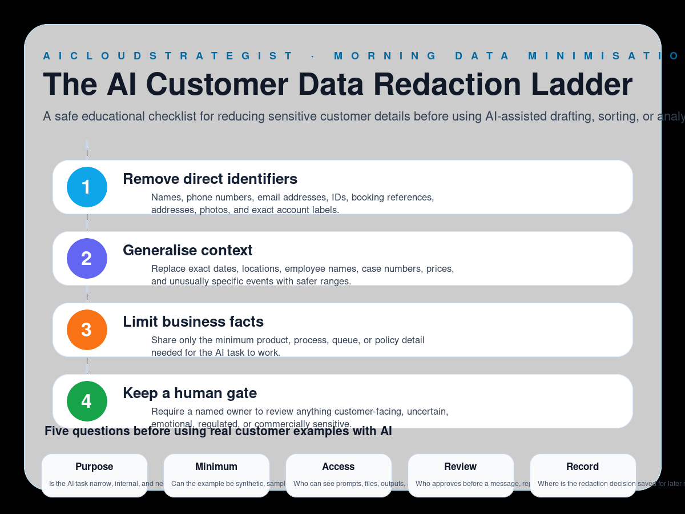

Morning publication · AI data minimisation
The AI Customer Data Redaction Ladder
A safe educational checklist for reducing sensitive customer details before using AI-assisted drafting, sorting, or analysis.

Four redaction levels
- Remove direct identifiers: Names, phone numbers, email addresses, IDs, booking references, addresses, photos, and exact account labels.
- Generalise context: Replace exact dates, locations, employee names, case numbers, prices, and unusually specific events with safer ranges.
- Limit business facts: Share only the minimum product, process, queue, or policy detail needed for the AI task to work.
- Keep a human gate: Require a named owner to review anything customer-facing, uncertain, emotional, regulated, or commercially sensitive.
Five questions before using customer examples
- Purpose: Is the AI task narrow, internal, and necessary?
- Minimum: Can the example be synthetic, sampled, or shortened?
- Access: Who can see prompts, files, outputs, and logs?
- Review: Who approves before a message, report, or change leaves the business?
- Record: Where is the redaction decision saved for later review?
How to use this ladder
Use this ladder before pasting real messages, tickets, exports, notes, recordings, transcripts, or reports into any AI-assisted workflow. Start with synthetic or redacted examples, keep the AI task narrow, and pause customer-facing outputs for human review.
Truth boundary
Educational workflow only — not legal, compliance, medical, financial, security, certification, savings, ranking, revenue, booking, or guaranteed-performance advice.